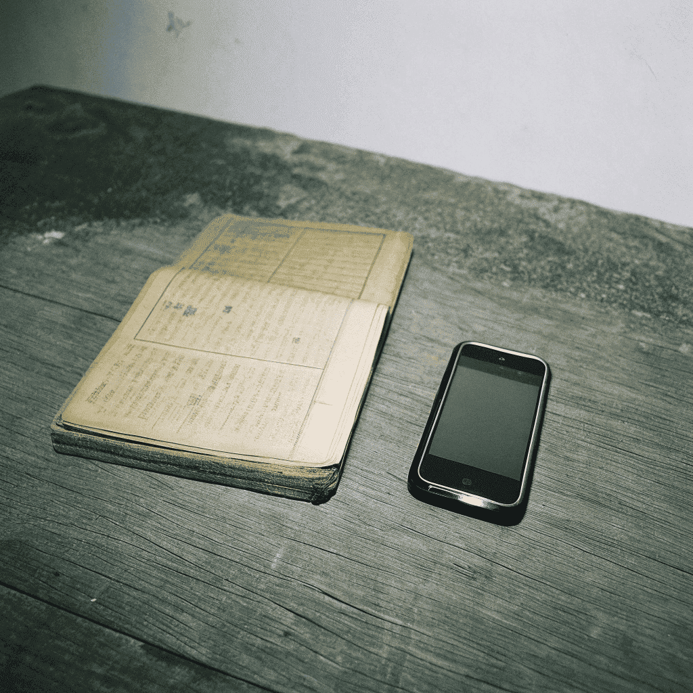

关于小鹿光年
创始人的故事：从大厂"打工人"到记忆守护者
"我是Arm，一个拥有自由灵魂但困于大厂的'苦逼'打工人。在追逐技术创新的同时，我从未忘记初心——用科技传递温暖。"
在加入大厂之前，我曾是一名充满理想的计算机专业学生。毕业后，凭借对AI技术的热爱和出色的编程能力，我成功进入了一家知名科技公司。在那里，我参与了多个重要的AI项目，积累了丰富的技术经验。然而，随着时间推移，我逐渐感到一种无形的压力和束缚。我开始思考：技术的意义究竟是什么？它能为人们的生活带来什么真正的改变？
去年，我的外公生了一场大病。那天，我坐在他的病床旁，突然意识到——那些他讲了一辈子的故事，可能随时会被时间带走。无论是他年轻时在农场的故事，还是他和我外婆相遇的浪漫回忆，这些珍贵的片段，如果不能被记录下来，终将消失在时光的长河中。每当他提起过去，眼中总是闪烁着光芒，那是一个个未被完整记录的精彩故事。
于是，我决定为他写一本回忆录。但当我真正开始记录时，才发现这件事有多难：手写太慢，录音和照片整理太累，付费代笔动辄上万。而外公的记忆，也随着时间逐渐模糊。这种无力感让我深感焦虑，我开始思考：在这个科技高度发达的时代，难道没有更好的方式来保存这些珍贵的记忆吗？
"适逢Deepseek横空出世，我决定做一个AI回忆录产品，帮外公，帮每个家庭，每个有故事的人记录他们的珍贵回忆。这不仅是一个产品，更是一份情感的寄托。"
品牌故事：用代码书写温暖
小鹿光年的诞生，源于一个简单的信念："记忆不该被遗忘，故事值得被珍藏。"这个名字寓意着我们希望像小鹿一样轻盈地穿梭在记忆的光年里，捕捉每一个珍贵的瞬间。在命名的过程中，我们特意选择了"小鹿"这个温暖而亲切的意象，它象征着我们产品的特质：灵动、温暖、富有生命力。而"光年"则代表着我们对时间和空间的跨越，象征着记忆可以突破时空的限制，永远保存。
我们相信，每个人的一生都是一部独特的史诗，而AI技术可以帮助将这些零散的回忆转化为永恒的故事。通过语音转写、照片修复、情感润色等AI技术，我们让记录变得简单、温暖、触手可及。我们的AI系统采用了最先进的自然语言处理技术，不仅能够准确识别各种方言和口音，还能理解说话者的情感和语境，确保每一段记忆都被完整而真实地保存下来。特别是在方言识别方面，我们开发了专门的方言语音识别模型，让老一辈人可以用最自然的方式讲述他们的故事。
"我们不是技术的奴隶，而是记忆的守护者。AI技术在我们手中，成为了连接过去与未来的桥梁。"
小鹿光年不仅是一个AI产品，更是一个连接代际情感的桥梁。我们帮助长辈轻松讲述故事，让年轻一代了解家族历史，让每一段回忆都能跨越时空，成为家族的传家宝。我们的产品设计极其注重用户体验，采用了直观的语音交互界面，即使是不熟悉科技的老年人，也能轻松使用。通过简单的语音对话，就能将回忆转化为生动的文字，配上AI修复的老照片，让故事更加丰富多彩。在照片修复方面，我们运用了先进的AI算法，能够修复破损的老照片，为泛黄的记忆注入新的生命力。
品牌愿景：让记忆成为永恒
"我们的目标，是让每个家庭都能拥有属于自己的'记忆博物馆'，让每一个故事都能被完整地保存和传承。"
在未来，小鹿光年将继续探索AI在情感计算领域的创新应用。我们正在开发更先进的多模态AI系统，能够同时处理语音、图像、文字等多种形式的记忆载体。这个系统将能够理解并分析说话者的情感变化，自动为故事添加适当的情感标注，让记录的内容更加丰富立体。我们希望通过技术，让记忆的保存更加智能化、个性化、人性化。无论是方言保护、老照片修复，还是多代际共创模式，我们都致力于让每一段回忆都能被完整、真实地保存下来。
我们还计划推出家族树功能，将不同代际的故事串联起来，形成完整的家族记忆网络。这个功能不仅仅是简单的家谱展示，而是一个智能的故事关联系统。通过AI技术，我们可以智能地发现故事之间的联系，自动将相关的记忆片段串联在一起，帮助家庭成员更好地理解自己的根源和历史。同时，我们也在探索AR/VR技术，开发沉浸式的记忆回溯体验。想象一下，戴上VR设备，就能身临其境地感受长辈年轻时的生活场景，或是通过AR技术，在现实空间中重现历史瞬间，这将会是一种前所未有的记忆传承方式。
"我们相信，记忆是连接过去与未来的纽带，而小鹿光年，将守护每一段珍贵的故事，让爱与回忆永远传承。"
结语
"记忆是时间的礼物，而小鹿光年，是守护这份礼物的使者。让我们一起，用科技的力量，编织永恒的情感纽带。"
我们邀请每一个有故事的人，加入我们的记忆守护计划。无论是想要记录自己人生故事的长者，还是希望保存家族历史的年轻人，小鹿光年都将成为你忠实的记忆守护者。我们相信，每一个普通人的故事都独一无二，每一段平凡的记忆都值得被珍藏。让我们携手同行，用AI的力量，让每一个故事都能跨越时空，成为永恒的传家宝。